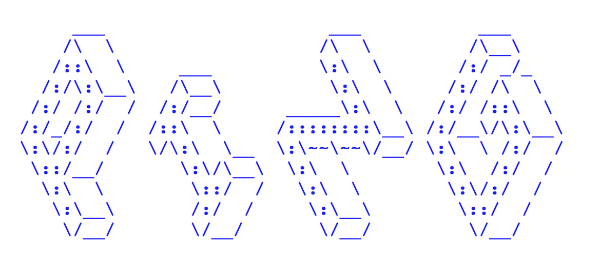

Sarah Garcin & Victor Lebeau
LGM 2016
## Why ? We had a problem…
When someone shares a piece of knowledge, note takers transcript, in their own way, the same content.
But, we can't pull our efforts together and mutualize, in real-time, our notes.
## …which had not been solved…
Collaborative text editors like Etherpad or Googledocs already exist.
[Tools for collaborative writing](http://c.sarahgarcin.com/champ)
## So we cracked our own stuff…
Our tool’s main goal is to allow a personal note taking and, in the same time, a visualisation of the other contributors’ notes.
This mutualisation produces an online document upgraded by everyone’s work.
## Which practices? Which applications?
- Brainstorming
- Meetings
- Courses
- Conferences
- Festivals
More broadly, people sharing knowledge at the same time, in the same place.
## We could make it a way better
We designed PING based on experiments in real-world context.
But it's not functionnal, it's only a prototype.
Adding keyboards shortcuts
Note takers organisation in real time
Sharing and commenting images
Images linked to timeline
## Thanks :)
## Ressources
Github repo:
https://github.com/sarahgarcin/ping-v2
Soon a website !